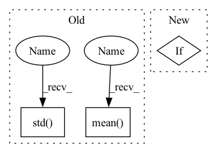

Pattern ID :11994
Before Change
if np.any(np.isinf(self.population_energies)):
intol = False
else:
intol = (np.std( self.population_energies) <=
self.atol +
self.tol * np.abs(np.mean( self.population_energies) ))
if warning_flag or intol:
break
After Change
if self.callback:
c = self.tol / (self.convergence + _MACHEPS)
warning_flag = bool(self.callback(self.x, convergence=c))
if warning_flag:
status_message = ("callback function requested stop early"
" by returning True")
In pattern: SUPERPATTERN
Frequency: 4
Non-data size: 3
Instances Fragment ID: 40550746
Project Name: scipy/scipy
Commit Name: a50ca1edd57935e1006cdb146d6c5bcf231c859f
Time: 2020-03-17
Author: andyfaff@gmail.com
File Name: scipy/optimize/_differentialevolution.py
M Class Name: DifferentialEvolutionSolver
N Class Name: DifferentialEvolutionSolver
M Method Name: solve(1)
N Method Name: solve(1)
M Parent Class: object
N Parent Class: object
M File Name: scipy/optimize/_differentialevolution.py
N File Name: scipy/optimize/_differentialevolution.py
M Start Line: 743
M End Line: 784
N Start Line: 771
N End Line: 779
Before Change
numpy_metadata: Dict[str, "MetadataType"] = {
"shape": tuple(arr.shape),
"dtype": DType(arr.dtype.type),
"mean": np.mean( arr) .item(),
"std": np.std( arr) .item(),
"min": min_val,
"max": max_val,
}After Change
The extracted metadata as a dictionary.
base_metadata = super().extract_metadata(arr)
if np.issubdtype(arr.dtype, np.number):
return {**base_metadata, **self.extract_numeric_metadata(arr)}
elif np.issubdtype(arr.dtype, np.unicode_) or np.issubdtype(
arr.dtype, np.object_ Fragment ID: 40550745
Project Name: maiot-io/zenml
Commit Name: 343bd21c1db69411eb4081c00db792a90f308c95
Time: 2023-03-09
Author: 34200873+safoinme@users.noreply.github.com
File Name: src/zenml/materializers/numpy_materializer.py
M Class Name: NumpyMaterializer
N Class Name: NumpyMaterializer
M Method Name: extract_metadata(2)
N Method Name: extract_metadata(2)
M Parent Class: BaseMaterializer
N Parent Class: BaseMaterializer
M File Name: src/zenml/materializers/numpy_materializer.py
N File Name: src/zenml/materializers/numpy_materializer.py
M Start Line: 137
M End Line: 148
N Start Line: 189
N End Line: 196
Before Change
data_params.t_start = np.min(df["ds"].iloc[:split_idx])
data_params.t_scale = np.max(df["ds"].iloc[:split_idx]) - data_params.t_start
if "y" in df:
data_params.y_shift = np.mean( df["y"].iloc[:split_idx].values) if normalize_y else 0.0
data_params.y_scale = np.std( df["y"].iloc[:split_idx].values) if normalize_y else 1.0
// Future TODO: extra regressors
After Change
data_params: AttrDict of scaling values (t_start, t_scale, [y_shift, y_scale])
if df["ds"].dtype == np.int64:
df.loc[:, "ds"] = df.loc[:, "ds"].astype(str)
df.loc[:, "ds"] = pd.to_datetime(df.loc[:, "ds"])
Fragment ID: 40550750
Project Name: ourownstory/neural_prophet
Commit Name: 1192f2f451030b40c2b8561aa0ffd602479e2852
Time: 2020-06-05
Author: oskar.triebe@merantix.com
File Name: neuralprophet/df_utils.py
M Class Name: AnonimousClass
N Class Name: AnonimousClass
M Method Name: init_data_params(4)
N Method Name: init_data_params(4)
M Parent Class:
N Parent Class:
M File Name: neuralprophet/df_utils.py
N File Name: neuralprophet/df_utils.py
M Start Line: 18
M End Line: 37
N Start Line: 20
N End Line: 44
Before Change
q_losses, policy_loss, entropy_loss, alpha = self.agent.update(data_batch)
self.logger.log_var("loss/q_min",np.min(q_losses),ite)
self.logger.log_var("loss/q_max",np.max(q_losses),ite)
self.logger.log_var("loss/q_mean",np.mean( q_losses) ,ite)
self.logger.log_var("loss/q_std",np.std( q_losses) ,ite)
self.logger.log_var("loss/policy",policy_loss,ite)
self.logger.log_var("loss/entropy",entropy_loss,ite)
self.logger.log_var("others/entropy_alpha",alpha,ite)After Change
duration = iteration_end_time - iteration_start_time
durations.append(duration)
if ite % self.log_interval == 0:
for loss_name in loss_dict:
self.logger.log_var(loss_name, loss_dict[loss_name], ite)
if ite % self.test_interval == 0: Fragment ID: 40550743
Project Name: x35f/unstable_baselines
Commit Name: 29d21b411c02aa5529540bac557cbb9cd79e7f17
Time: 2021-03-23
Author: 1621322691@qq.com
File Name: redq/trainer.py
M Class Name: REDQTrainer
N Class Name: REDQTrainer
M Method Name: train(1)
N Method Name: train(1)
M Parent Class: BaseTrainer
N Parent Class: BaseTrainer
M File Name: redq/trainer.py
N File Name: redq/trainer.py
M Start Line: 48
M End Line: 91
N Start Line: 43
N End Line: 87